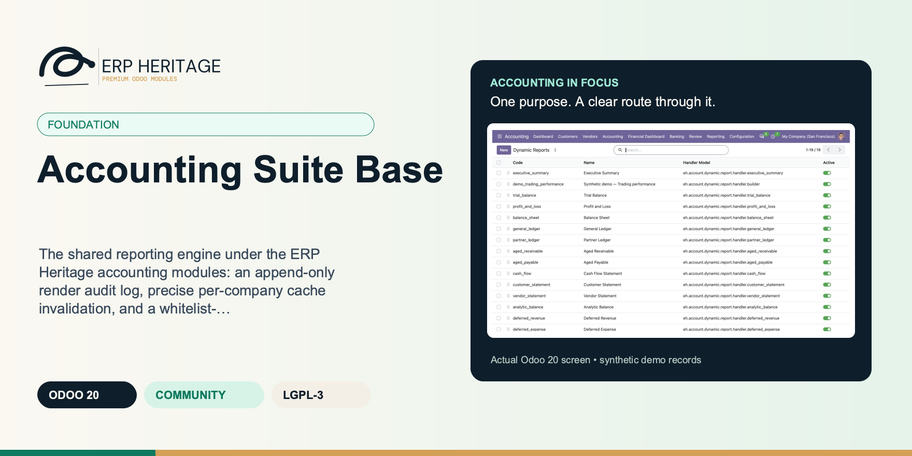
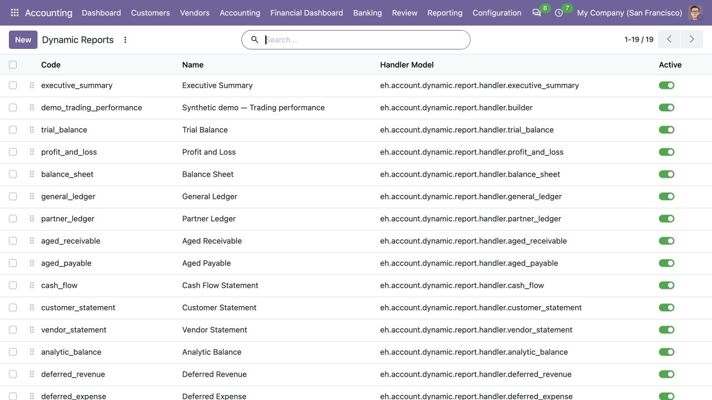
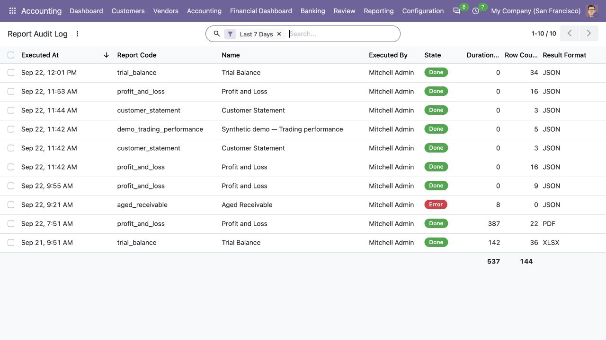
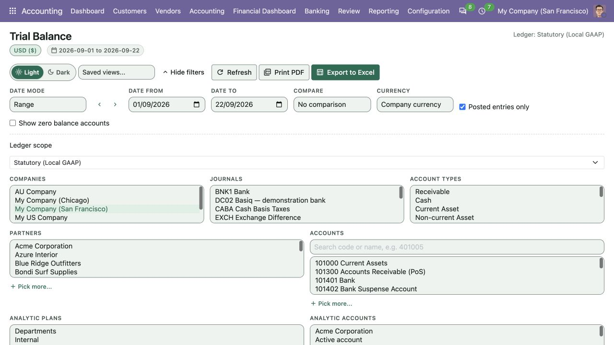

ERP HERITAGE / ODOO 20 COMMUNITY
The shared reporting engine under the ERP Heritage accounting modules: an append-only render audit log, precise per-company cache invalidation, and a whitelist-only parameterised SQL builder.
LGPL-3 · Odoo 20 · v20.0.1.8.3 · Module guide, setup, workflows and rollout checks
The purpose
The shared engine that powers the ERP Heritage accounting modules for Odoo 20 Community. It auto-installs as a dependency of any ERP Heritage accounting module, so you do not need to install it by hand.
Inside Odoo 20
Captured from Odoo 20 Community using synthetic demonstration records. Configuration screens show the available workflow; external service connectivity still requires the relevant provider setup and validation.

Report registry lists standard and custom report definitions, handler names and activation status.
Captured 2026-09-22 from isolated Odoo 20 Community database with synthetic demonstration records. No external submission or live banking activity is represented.

Report execution history records the user, output format, duration, row count and Done or Error outcome.
Captured 2026-09-22 from isolated Odoo 20 Community database with synthetic demonstration records. No external submission or live banking activity is represented.

Shared report filters expose statutory ledger scope alongside company, journal, account and analytical selections.
Captured 2026-09-22 from isolated Odoo 20 Community database with synthetic demonstration records. No external submission or live banking activity is represented.
Inside this module
Each report run writes an append-only execution row: the user, the timestamp, the full options snapshot, the runtime, and a SHA-256 result hash for XLSX and PDF. Re-run the same options against an unchanged ledger and the figures reproduce exactly. Even a cache hit writes its own row, and a failed render is recorded as an error, not lost.
A per-company move-version counter bumps atomically on every journal entry state change. A cache hit therefore means nothing has posted, drafted, or cancelled since the payload was built. The counter is a single SQL UPDATE that adds one, so it is correct under concurrency, and it invalidates only the companies that actually changed.
The reporting hot path runs through a parameterised, analytic-aware SQL builder. Every value binds as a parameter, every identifier comes from a fixed whitelist, and every query is company-scoped, so there is no raw interpolation and no cross-company leakage. It is plain Python you can unit-test without spinning up the Odoo registry.
A write that includes state in the values but does not actually change it (a routine recompute) does not spuriously bump the move-version counter or invalidate the cache. The override snapshots the prior state per record and bumps only the ids where the state genuinely transitioned.
A move created already in state posted, bypassing posting action entirely, still invalidates the cache. The create override filters posted moves and bumps their companies' counters, so a back-dated or scripted insert cannot leave a stale report standing.
A render for companies [1,2] is never served a payload computed for [1] alone. The cache keys on a sorted-comma company set for exact equality, not an IN match that would treat overlapping sets as a hit, so a wider scope can never collide with a narrower cached one.
A cache hit still writes its own audit row pointing back at the source execution, so the compliance trail records every render, not just the first. You can prove how many times a figure was produced and from which cached source.
The per-company counter uses UPDATE col = col + 1 rather than a read-then-write, so two posts landing at the same instant both count and neither is lost, and only the affected company rows are invalidated.
From input to outcome
Establish who prepares, manages and reviews reports and confirm the companies each role may access. Gather company scope, user permissions, ledger records, reporting options and currency configuration. Use a representative case with a known expected result so the team can separate configuration decisions from unexpected behaviour. Keep the supporting commercial or accounting evidence available during review.
Run a report through a consuming accounting module and retain its options together with the execution record. Follow the record’s available actions in the order intended by the workflow. Review the selected company, relevant dates and any validation messages before continuing. If the source data changes, reassess the result against the updated evidence.
You open the report-execution log and filter to that report. There is the exact row: who ran it, the timestamp, the full options snapshot (period, companies, comparison settings), the runtime, and the SHA-256 hash of the exported file. You re-run the report from that stored snapshot against the unchanged ledger and the cache returns the same payload, so the figures match line for line. The auditor logs in under the read-only Auditor role and reads the same trail without any ability to post, edit, or delete a thing. Meanwhile a colleague posts a correcting journal in another company: that company's move-version counter ticks, its cached reports recompute on the next run, and the company you are reviewing is untouched.
Compare a repeat run with the same scope and then a run after an intentional source change, checking that the recorded provenance remains understandable. Compare the outcome with the expected treatment for this case and record the reason for any difference that requires follow-up. Give exceptions an owner so they do not disappear inside a period-end spreadsheet.
Use the shared engine as infrastructure for the suite; select a reporting module for the accountant-facing report library. Include the accepted operating example, configuration choices and unresolved dependencies in the handover. Review them when business policy, source data or the surrounding Odoo applications change.
Business situations
Accounting Suite Base is relevant to accounting administrators and reporting owners who need to answer this question: Can a financial report be explained from its scope, source options and recorded execution? Start with the process that creates the decision, identify its owner and agree what evidence the reviewer needs. A narrow pilot helps the team evaluate the supported workflow using its own accounting data before broadening access.
Use the module’s foundation role as one part of a controlled close. Bring the relevant company scope, user permissions, ledger records, reporting options and currency configuration to the review, then explain the result alongside the business event it represents. Establish which outputs become part of the reporting pack and which outstanding matters need a separate accounting decision.
Turn the business question into an acceptance case: Can a financial report be explained from its scope, source options and recorded execution? Use one ordinary example and one relevant exception from the supported scope below. Ask the intended operator to prepare it and the reviewer to explain the result. Retain that accepted example with the deployment notes so future changes can be assessed against an understood process.
Before the first result
Confirm that the organisation needs the supported foundation process described here. Identify the responsible accounting administrators and reporting owners and write down the decision they expect the module to support. Use the limitations section to separate shipped behaviour from an integration, professional judgement or operational service that needs another owner.
Prepare company scope, user permissions, ledger records, reporting options and currency configuration. Check the relevant records in the intended company and use dates that match the business event. Resolve missing accounting configuration before evaluating calculated output; plausible-looking totals do not establish that the chosen inputs or policies are correct.
This module declares the standard Odoo modules declared in its manifest as part of its installation foundation. Its direct standard-Odoo dependencies are account. Review the actual dependency set in the target database before a rollout, especially where another addon also extends the same accounting models, menus or posting actions.
Define who operates Accounting Suite Base, who reviews unusual results and who maintains configuration. Run the representative workflow below in a test database using the intended users. Confirm that users can reach the work they own and that the reviewer understands the available evidence before moving the process into live operation.
Workflow reference
Reproducible report audit log. Every report render is recorded as an Accounting report execution audit log row: who ran it, when, with the full options snapshot, how long it took, and a SHA-256 hash of the result (for XLSX and PDF output). Re-running a report from its stored options snapshot against an unchanged ledger returns the same cached payload, so the figures reproduce exactly. The log is append-only.
Precise cache invalidation. A server-owned per-company report-input counter is incremented atomically for posted-ledger changes and report-visible master data, configuration, exchange rates, and supported suite sub-ledgers. The direct SQL increment has no read-modify-write race. Cache lookups carry the counter, exact company scope, normalized options, primary-company policy, and language, so stale or cross-scope payloads are recomputed instead of served.
Parameterised SQL builder. A multi-company, analytic-aware query composer that the report handlers use on the hot path. Every value binds as a query parameter, identifiers come from a fixed whitelist, no user input is interpolated into raw SQL, and every query is company-scoped so there is no cross-company leakage. It is plain Python and unit-testable without the Odoo registry.
Three-tier privilege model. User, Manager, and a read-only Auditor role, decoupled from the standard Odoo accounting groups, so an auditor can read the execution log and reports without any write access.
Dynamic Account Reports (free): P&L, Balance Sheet, Trial Balance, General Ledger, Aged Receivable and Payable, Cash Flow, Partner Ledger. Dynamic Reports Pro: custom report builder, scheduled email delivery, multi-period forecasting, budget variance. Bank Reconciliation Pro, Collections Workbench, Period Close Workflow, Multi-Version Budget Pro, Recurring Invoices Pro, Post-Dated Cheques, FX Period-End Revaluation, IFRS 16 Lease and Fixed Assets, Vendor Bill Automation.
No silent fallbacks. Missing config, missing accounts, and malformed input each surface explicit messages naming the bad field. Failed renders are recorded too: on exception the execution row is marked error with the message and the exception is re-raised. Multi-company aware throughout. Plain Python tools (SQL builder, payload codec, XLSX writer) are unit-tested without the ORM, which keeps the hot path predictable.
Per-company account code and translated account name are resolved at SQL time from jsonb stores with en_US fallback, and GROUP BY is kept in lock-step with SELECT and ORDER BY so the query does not throw a Postgres GROUP BY error under a non-en_US language.
When the companies in scope hold different currencies, the payload is marked multi currency and the XLSX writer renders amounts with no symbol rather than stamping a wrong one. It refuses to imply a single currency that does not exist.
The cache codec carries a one-byte version prefix so future compression formats can coexist with already-stored entries, and an unknown version raises rather than silently mis-decoding an old payload into garbage.
Accounting report execution audit log captures user, timestamp, the full options dict, runtime, and a SHA-256 result hash for XLSX and PDF output. Failed renders are marked error with the message and the exception is re-raised, so nothing disappears.
company gains an ORM-readonly Move Version Counter field maintained by a direct SQL UPDATE and read only by the cache infrastructure. Payloads are served on a strict company-scope hit and recomputed on the next state change.
A multi-company, analytic-aware query composer for the reporting hot path. Values bind as parameters, identifiers come from a fixed whitelist, no user input touches raw SQL, every query is company-scoped, and it runs as plain Python under its own unit tests.
User, Manager, and a read-only Auditor role, decoupled from the standard Odoo accounting groups, so an auditor reads the execution log and reports with no write access.
Report payloads carry a per-scope currency block; the bundled XLSX writer renders amounts with the correct symbol, decimal places, and symbol position, and falls back to no symbol when the scope is genuinely multi-currency.
The SQL builder, the zlib payload codec, and the XLSX writer are plain Python backed by standalone unit tests that need no Odoo registry, which keeps the hot path predictable and fast to test.
Set by an ERP Heritage sub-ledger when this journal entry is the posted GL counterpart of a frozen figure (a provision, revenue contract, asset, tax run, and so on). A sealed posted entry cannot be reset to draft or have its figures edited in place; it is unwound only by reversing the source record, which posts a reversing entry and preserves the audit trail.
Set by an upgrade when a historical journal entry legal-PDF binding predates server-owned delivery evidence. The bytes and move link are retained immutably for audit, but the attachment is detached from the legal-PDF facade.
Sorted comma separated representation of Companys. Used for strict equality in the cache lookup; an m2m IN filter would match overlapping sets and return wrong scoped rows.
SHA-256 of the compressed cache payload. Cache reads verify this digest before deserialising so replacing the backing attachment cannot substitute a different financial report.
Set only by the server-owned completion path. Rows created directly, including rows predating this trust marker, are never eligible to serve a shared cache payload.
When this execution served a result from a prior cached execution, this is a pointer to that prior execution. The audit log keeps one row per actual user request even when the underlying compute was reused, so compliance reporting lists every render.
True when the user has the line expanded; false when collapsed. Default True so a freshly-encountered line starts expanded (matching the OWL viewer's first-render behaviour).
Quick period selector. MTD/QTD/YTD run from the start of the current month/quarter/fiscal year through today. The Last variants cover the most recently completed period. Custom unlocks Date From and Date To for free entry.
When set, P&L and Balance Sheet lines are nested under their parent accounts with expand / collapse controls. When unset, accounts render as a flat list (useful when the chart of accounts has no parent accounts configured).
Cash Flow Statement method. Direct shows cash receipts and payments by activity. Indirect starts from net income and adjusts for non-cash items and working-capital movements (preferred by most auditors). Only applies to the Cash Flow report; ignored elsewhere.
When set, only entries in state=posted are included. Draft and cancelled entries are excluded. Recommended for reports that feed financial statements.
When set, accounts and partners with a zero balance over the period are still rendered. Useful for full chart-of-accounts coverage; off by default to keep reports compact.
Server-owned monotonic version of report-visible inputs, including ledger, master-data, configuration, currency-rate, and supported sub-ledger changes. Used by the ERP Heritage reporting cache to detect staleness. Do not edit manually.
Number of journal items fetched per page when an account line is expanded on demand in a dynamic report. Lower values feel snappier on huge accounts; higher values page less often.
Expense accounts presented on the Finance Costs line of the by-function Profit and Loss. These are excluded from Operating Expenses so nothing is counted twice.
Accounts treated as cash equivalents on the Cash Flow Statement, alongside Bank and Cash accounts. Movements between cash and these accounts are presented as pure cash transfers (no activity), and their balances are included in the opening and closing cash position.
Expense accounts presented on the Tax Expense line of the by-function Profit and Loss. These are excluded from Operating Expenses so nothing is counted twice.
Tax-expense accounts whose movement is deferred tax. On the by-function Profit and Loss the Tax Expense subtotal is split into a Current Tax line and a Deferred Tax line; these accounts form the Deferred Tax line, and the remaining Tax Expense accounts form the Current Tax line. Left empty, a single Tax Expense line is shown.
Additional journal whose cash-touching entries revalue cash held for exchange-rate changes, presented on the Effect of exchange rate changes on cash line of the Cash Flow Statement, alongside the standard exchange difference journal.
Without any account tagged EH Income Tax Paid, show an Income Taxes Paid line on the Cash Flow Statement measured from cash settlements against the tax repartition target accounts. Includes indirect tax (VAT/GST) remittances; tag the income tax accounts instead for an exact line.
Maximum journal-item rows the General Ledger and similar row-driven reports will materialise before refusing to render. Higher values render larger reports but use more memory.
How many days of history the financial dashboard scans for AR / AP overdue and recent activity tiles. Smaller values make the dashboard refresh faster.
Owner of the view. Shared definitions survive owner removal with an empty owner; private definitions then become visible only to administrators until reviewed or reassigned.
When True, the view is visible to every user in the company with access to the report. The owner remains the only user who can edit or delete.
Illustrative implementation exercise. A reviewer receives two balance-sheet exports with the same dates and asks whether they were produced from the same accounting context. Open their execution evidence and compare the company scope and options, rather than assuming that matching file names prove equivalence. A changed ledger or report-visible configuration can make a later result legitimately different. In a test database, run the report twice without changing its inputs, then make a controlled relevant change and run it again. Inspect how the source execution and refreshed computation can be explained. Keep this exercise focused on reproducibility: caching improves reuse of the applicable computation, while the audit record explains how the report was requested.
Questions before rollout
It is designed for accounting administrators and reporting owners. Its central business question is: Can a financial report be explained from its scope, source options and recorded execution? The listing describes the shipped operating scope and the decisions that remain with the organisation. Evaluate it against your own records and review process, rather than treating the module name as a promise to cover every scenario in that accounting area.
Have company scope, user permissions, ledger records, reporting options and currency configuration ready, together with the person who owns the related accounting policy. Establish who prepares, manages and reviews reports and confirm the companies each role may access. A known example makes it possible to check the result and resolve configuration questions before the process is repeated across more records or companies.
Compare a repeat run with the same scope and then a run after an intentional source change, checking that the recorded provenance remains understandable. Keep the relevant source evidence with the output and be explicit about company, date and policy choices. The most useful review asks whether the result follows from the business inputs, not only whether the operation completed without a validation message.
It belongs to the foundation family. Its declared custom dependency foundation is the standard Odoo modules declared in its manifest. Installing the complete suite also brings other operating and specialist modules; using this focused module should be evaluated against its own dependency list and scope. Optional services still need their own configuration and agreement where applicable.
This is an engine module, not a full end-user reporting pack. It exposes the shared audit log, report wizard, journal-entry PDF, and infrastructure; the complete financial-report catalogue (P&L, Balance Sheet, General Ledger, and so on) lives in the reporting modules that depend on it. Use the shared engine as infrastructure for the suite; select a reporting module for the accountant-facing report library.
No. Accounting Suite Base provides the specific records, calculations or workflow described in this listing. The organisation remains responsible for its source information, accounting choices, supporting evidence and review. Where the process uses an estimate, a contract assessment or an external service, appoint the appropriate owner before relying on the output.
Scope and requirements
This is an engine module, not a full end-user reporting pack. It exposes the shared audit log, report wizard, journal-entry PDF, and infrastructure; the complete financial-report catalogue (P&L, Balance Sheet, General Ledger, and so on) lives in the reporting modules that depend on it.
This module ships shared backend design tokens and the list-statistics field, but not the OWL financial-report viewer. The interactive viewer is provided by downstream reporting modules that consume this engine's payload contract.
Currency-aware rendering covers the bundled XLSX writer and the journal-entry PDF's monetary cells. Downstream financial-statement PDFs consume the same currency metadata for their own layouts.
The SHA-256 result hash is written only when the caller supplies it, which the XLSX and PDF export paths do. The default JSON render path stores the full options snapshot but no result hash. Reproducibility on that path comes from replaying the stored cached payload, not from a re-proven byte-identical recompute.
The move-version counter bumps on journal entry state changes (post, set-to-draft, cancel). Hard-deleting a move record at the database level does not bump the counter.
Standards references describe the accounting subject addressed by the module. They do not establish certification, statutory filing acceptance or suitability for every jurisdiction. Your finance team owns its assumptions, accounting policies and review.
Installation scope
Odoo installs the following direct dependencies automatically. Additional dependencies can be brought in by those modules. Related modules in the wider catalogue are optional unless they appear in this dependency chain.
Odoo Community dependency required by this module. Its own dependencies and configuration remain part of the installation scope.
Acceptance guide
The following are recommended rollout checks, not claims of additional built-in features. Apply the checks relevant to this module and retain evidence of your own results.
Select a recent, closed period that your finance team understands well. Keep its approved source documents, ledger totals and existing working papers available. Reproduce that period in a staging database before working on current transactions. A familiar period makes differences visible: you can distinguish an opening balance problem from a configuration choice, a timing difference or a genuine defect. Agree which person owns each discrepancy and what evidence will close it. Successful installation is the starting point; a repeatable business outcome is the acceptance criterion.
Write down the output your team needs from this module: a reviewed transaction, an exported file, a reconciled balance, an approved schedule or an operational queue. Identify who prepares it, who reviews it and who relies on it next. Make the scope concrete with one company, one reporting period and a small representative document set. Include an ordinary case and an exception. This keeps the evaluation focused on the business decision instead of the number of available screens, and gives reviewers a consistent way to compare the new workflow with their current process.
Use the Odoo 20 edition of the module and its dependencies together. The manifest defines what Odoo installs automatically; a feature mentioned elsewhere in the wider product family is not automatically included. Review the dependency guide on this page before enabling the complete suite, especially where your deployment also uses Sales, Purchase, Inventory or website components. Confirm that your hosting arrangement accepts custom server modules and their Python requirements. Keep a copy of the installed module versions with your acceptance record so a later update can be checked against the same baseline.
Check the companies, currencies, fiscal periods, journals, accounts and partner records used by your sample. Confirm that account purposes agree with your chart of accounts and that archived records are not being selected inadvertently. Review company-specific settings while the intended company is active. Where a workflow needs bank details, analytic dimensions, product information or payment terms, validate those inputs with their owner. Clean master data reduces repeated exceptions and makes it easier to investigate the exceptions that remain. Keep the preparation list short enough for someone else to repeat it.
Decide which source establishes the opening position before introducing new transactions. Save the source date, company, currency and supporting reconciliation. If a module maintains a schedule or a working-paper balance alongside the ledger, document how that opening amount should tie to the general ledger. Do not use balancing entries to hide a difference during the pilot. Classify the difference, correct its source and rerun the comparison. The resulting trail is useful both for your internal reviewer and for support if an unexpected calculation needs investigation.
Choose named users for preparation, review and administration. Confirm their practical access by signing in as those users in staging, rather than relying on an administrator's view of the menus. A visible menu does not replace model access or record restrictions, and a hidden menu does not by itself prove that data is protected. For your own acceptance check, verify the specific business operations each role needs. If your organization requires separation of duties, include that policy in the rollout criteria and check the actual workflow against it before granting production access.
Run the sample with the intended company selected, then repeat the relevant navigation and search checks as a user assigned to a different company. Record which company owns each source document and each generated result. For users who work across entities, confirm how their allowed-company selection affects totals and available records. Investigate any cross-company difference before it becomes a month-end problem. Group-level work and company-level work have different scopes; use the appropriate module and document the scope on the review evidence instead of assuming one screen represents both.
Include a company-currency case and, where relevant to the module, a foreign-currency case. Check the date used to select exchange rates and keep the rate source available to the reviewer. Add a transaction near a period boundary so the team can see whether document date, accounting date or another business date drives the result. Test decimal precision with a small amount as well as a large one. Record the expected rounding treatment. These checks turn vague differences in totals into questions that can be resolved against your accounting policy.
Choose one result and follow the available links or record references back to the original business document. Compare its company, partner, amount, currency and dates with the expected source. Where the workflow creates a journal entry, inspect the accounts and balancing lines before relying on an aggregate report. Where it exports a file, compare the file's records with the selected batch. Save a small, intelligible evidence set instead of an indiscriminate screenshot archive. A reviewer should be able to explain what happened without needing the original preparer beside them.
If this module creates or updates accounting entries, separate preparation from the decision to post in your operating procedure. Inspect the proposed outcome, resolve missing configuration and confirm the intended period before using a posting action. If the module does not post entries, identify the equivalent commitment point, such as sending a file or approving a review record. Record who is allowed to make that decision. The page describes the module's supported workflow; your team still needs an operating policy that fits its accounting responsibilities and approval structure.
From pilot to production
Use a deliberately incomplete sample in staging: a missing required setting, an unsuitable date or a source document that is not ready for the next step. Observe the actual message and the record state that remains. Correct the input and repeat the operation. Check that the recovered result agrees with the ordinary successful case. For transactions already committed, use the supported correction or reversal workflow rather than editing database records. Your acceptance record should explain how staff recover from mistakes, because that is part of day-to-day usability, not an unusual administrative task.
Repeat an import, calculation, preparation step or button action only where the documented workflow permits it. Confirm whether the expected behavior is a recalculation, a refusal, a new version or reuse of an existing record. Do not infer universal duplicate prevention from one successful test. Record the behavior of the actual operation your team will use and include it in staff guidance. A small, identifiable sample makes duplicate records easy to spot and avoids creating a misleading acceptance result from a large batch with poorly understood contents.
Where accounting dates are involved, inspect your company's lock settings and the role that can change them. Include one sample dated inside a closed period and one in the open period, then observe the supported behavior with normal finance access. Agree how the team will handle late documents and approved corrections. The goal is a clear route for legitimate work that preserves the reason the period was closed. Record the policy alongside the module's workflow so operators know when to stop and involve the person responsible for the close.
If the module produces reports or exchange files, have the intended recipient inspect a sample. For a finance report, check the filters, company, dates, currency, labels and totals. For a bank or service file, use that recipient's own validation or test process before a production submission. Generating a structurally valid file does not establish acceptance by every provider. Keep the exact sample and any recipient feedback with the rollout record. Where no export is provided, agree which supported screen or linked record serves as the handover evidence.
Identify any step that depends on a separately configured provider, connector, credential or commercial service. Confirm the exact adapter and its requirements before scheduling a live demonstration. Some family modules provide deterministic rules or file preparation without a live external connection; their usefulness should be evaluated on that basis. Test a provider failure in staging only when the adapter offers a safe test route. Make it clear who manages credentials and provider subscriptions, and who should be contacted when an external service is unavailable.
Time the operations your staff will actually repeat, using a dataset that resembles your expected company, date range and document volume. Record the environment and sample size beside the timings. Include navigation, filtering, preparation and review rather than quoting a single best-case page load. This page makes no universal performance promise: network latency, database size, customizations and infrastructure affect results. Use measurements to choose a practical rollout batch size and to identify any operation that needs investigation before more users join the workflow.
Give staff a short exercise that begins with a business situation and ends with a reviewed result. Include the expected amount or state, the navigation route, the point at which a reviewer becomes involved and the supported correction route. Let operators explain why their result is correct. Add only the settings and exceptions relevant to their role. A concise internal playbook built from your own pilot is easier to maintain than a large collection of unannotated screenshots, and it helps new users understand the relationship between this module and the rest of Accounting.
Capture the module version, Odoo version, affected company, operation, exact message and a minimal sequence of steps. Use redacted sample documents when sharing evidence outside your organization. State the expected result and the actual result separately. Include the date filters and role used, because the same record can look different with another scope or set of permissions. Never include passwords, API tokens or private keys in a support message. Good reproduction details allow the problem to be investigated without guessing at your business setup or asking staff to repeat a full close.
Before deploying an update, back up the database and filestore together, and restore that backup into an isolated environment. Apply the module update there, then repeat the key pilot scenarios using the saved acceptance record. Check that existing documents remain readable and that the expected actions and menus still lead to the right workflow. Include one newly created record as well as an older one. Keep a rollback plan appropriate to your deployment and confirm that the backup can be restored before scheduling the production change.
Agree the release criteria before the pilot ends: expected financial results, access boundaries, supported corrections, output acceptance and owner sign-off. List unresolved items with their business impact instead of treating every observation as a blocker or dismissing it as cosmetic. Start production with a manageable scope and a named reviewer. Keep the first cycle's evidence so that later enhancements can be assessed against a concrete baseline. App-store descriptions help you select and understand the module; acceptance in your own configuration establishes whether the workflow is ready for your team.
Connected capabilities
These related modules explain how this workflow connects to the wider accounting process. Only the dependencies declared above are installed automatically. Choose optional additions for a specific business need.
The accounting suite refuses to silently default. Missing rates, missing accounts, missing approval groups all surface explicit errors. That is excellent for correctness and harsh on first install. This module reframes the same configuration work as a guided checklist: one row per setup task, per company, with a deep link into the correct configuration screen and a clear state of to do, done, or skipped.
ERP Heritage Community Accounting Pro installs a fixed collection of 50 direct accounting dependencies. Together with the suite itself and the transitive EH EDI Core foundation, its custom-module closure contains 52 modules. The collection brings reporting, reconciliation, payments, receivables, approvals, specialist accounting, group work and close controls into one Community installation. Its value comes from connecting those processes and their evidence; adoption still requires deliberate company configuration, accounting ownership and review. Australian BAS is available separately and installs the suite as its accounting foundation.
Plan the surrounding workflow
The following playbooks explain adjacent work in named companion modules. They are included here to help you plan the handoff around this module. Each companion is labelled as an installed dependency or an optional addition. These capabilities belong to that named companion, not to the standalone module you are reading about.
Optional companion; requires separate installation
A first-install onboarding checklist that turns the suite's strict configuration errors into a guided, per-company setup with deep links.
The suite's strict configuration errors are reframed as 26 tasks across 7 categories. Each row tells the operator exactly what is left and opens the screen to fix it, instead of failing at first use.
A task whose deep link external id is missing, unresolved, or not an Odoo action raises a clear error naming the exact id, never a random fallback. The completion ratio excludes skipped companies from its denominator and reports completed work among active outcomes.
One progress line per task per company, with a unique constraint and a global isolation rule. A multi-company tenant sees the checklist once per company, with independent progress and no cross-company leakage.
Skipped companies remain visible in their own counter and are excluded from the completion-ratio denominator. The percentage therefore reports done versus still-to-do work without treating an explicit skip as either completion or pending work.
The Is relevant flag is fully searchable, not just displayable. A custom search method lets filters and group-by act on installed-module state, and raises a clear error on an unsupported operator instead of silently returning every row.
Open guards a missing action external id, an id that does not resolve, and an id that resolves to a non-action record. Valid actions pass through Odoo's canonical web-safe action serializer.
Install-time and new-company seeding are both idempotent and bulk-create only missing lines. Adding a company mid-life, or reinstalling after adding a sibling module, never duplicates lines or wipes existing progress.
The form's sibling kanban (same task, other companies) and peer kanban (same company, same category) both exclude the current record and respect scope, so an operator sees tenant progress and what is next without leaving the line.
Review this companion’s own setup and scope before connecting the workflows. Keep the company, reporting date and business document references consistent at the handoff.
Optional companion; requires separate installation
Profit and Loss, Balance Sheet, Trial Balance, General Ledger, Aged Receivable and Payable, Cash Flow, Partner Ledger, Statements. One OWL viewer, currency on every cell, audit log per render.
Executive Summary, Deferred Revenue, Deferred Expense, Bank Reconciliation, Trial Balance, P&L, Balance Sheet, General Ledger, Partner Ledger, Aged Receivable, Aged Payable, Cash Flow, Customer Statement, Vendor Statement, and Analytic Balance.
Both sides; the customer statement also lands on the customer portal home for self-service.
Every monetary cell renders with the company currency symbol; the XLSX writer builds a matching Excel number-format string so the spreadsheet matches the screen cell for cell.
Custom and multi-period comparison in either order, plus Profit and Loss, Balance Sheet, and Trial Balance columns by analytic account or plan with independently queried totals.
Trial Balance, Profit and Loss, and Balance Sheet offer Account hierarchy or Flat accounts using native Parent Account relationships. Parent own postings and descendants roll up once, including relevant archived parents and offsetting children. Saved views and scheduled exports retain the layout. Exact drill-down keeps company, ledger, period and analytic scope.
Every render including cache hits writes an audit row pointing at the source compute. An auditor can re-execute the same render later.
Universal PDF template with a brand footer; XLSX writer with the same currency block as the screen cell.
Every SQL build emits company scope; cache key carries the company set canonically so two scopes never collide.
Review this companion’s own setup and scope before connecting the workflows. Keep the company, reporting date and business document references consistent at the handoff.
Optional companion; requires separate installation
Block journal entry posting until every required approver in an amount-banded, ordered chain has signed off.
The gate sits on the journal entry post pipeline, before sequence numbering and reconciliation fire. Until the chain reaches approved, the move cannot post, and the block names the exact policy, pending group, and step that stopped it. No half-posted, gap-numbered moves slip through.
Two approvers clicking at once cannot both advance a step: an atomic compare-and-set with a stale-step guard lets one win and hands the other a clean retry. Every transition lands on an append-only log whose fields are immutable and whose deletion is refused at the model level.
Per-rule SLA hours compute a due time and an on-track, at-risk, or breached state. An hourly cron posts chatter and queues the shipped email reminder and escalates a breached request exactly once to a configured group, with per-record database savepoints and error isolation so one bad rule cannot stall the batch. The full lifecycle is covered by tests.
The post-time gate runs before upstream posting, so sequence numbering and reconciliation side effects only fire after approval. You never get a half-posted, gap-numbered move that approval later has to unwind.
Two approvers in the same group clicking approve at the same instant cannot both advance the step. A raw SQL compare-and-set with a stale-step guard lets one win and gives the other a clean retry, and the race is covered by a regression test.
Step order is pinned to an explicit sequence column, not the approver group's primary key. Creating or deleting unrelated security groups never silently reorders an in-flight approval chain.
The re-approval threshold has both a percentage and an optional absolute floor, so a large-percentage but tiny-absolute change can be exempted from re-signing while a genuinely material change still rolls the request back to step zero.
Re-approval is enforced on a plain write, not just on edit-and-post. Editing a watched field on a draft move that already had an approved request silently resets the request and posts a chatter note, so the next post attempt blocks.
Review this companion’s own setup and scope before connecting the workflows. Keep the company, reporting date and business document references consistent at the handoff.
Optional companion; requires separate installation
A modern, scored bank reconciliation workspace for Odoo 20 Community, with an append-only audit trail.
Candidates are ranked by amount, date proximity, partner, reference token overlap, and 90-day history, with a per-signal confidence breakdown surfaced in the workspace. The operator sees why a match was suggested before confirming it.
Every match records the user, time, confidence, rules fired, and whether it was an accepted suggestion or a manual override. The rows refuse write and unlink at the model level, so the decision trail stays intact.
LGPL-3 source on disk. No activation key, no phone-home, no recurring licence. Read it, extend the engine through inheritance, override individual heuristics for your bank memo conventions.
The original posted statement move remains untouched. A new balanced, sealed adjustment carries company and transaction currency on both legs; locked dates fail before a move is created.
Suggestion provenance is recomputed on the server, session counters update atomically, and a narrow advisory lock serialises only duplicate opens for the same user and journal.
Only a proven zero-foreign, non-zero-company remainder can use FX gain or loss accounts, under a hard server-owned cap. Unconfigured accounts or ordinary bank variance are refused.
Rules, journals, accounts, partners, candidates, and history are constrained to the active company. Invalid regexes, amount bands, and cross-company targets fail closed.
Search by reference or partner, filter by direction and date, and page through the complete open-line population. Candidate search also covers registered-payment outstanding accounts.
Automatic match rules still respect ambiguity and, by default, exact-amount checks. A configured rule may bypass the score threshold, but tied candidates stay for review. Each accounting decision, audit entry and session counter commits or rolls back together.
Review this companion’s own setup and scope before connecting the workflows. Keep the company, reporting date and business document references consistent at the handoff.
ERP Heritage
Start with the workflow, setup and acceptance guide above. For implementation or support, share your Odoo version, module version, business scenario and a redacted example. Keep credentials and personal data out of support messages.
Published by ERP Heritage. Odoo is a trademark of Odoo S.A.; this independently developed application is not an Odoo S.A. product or endorsement.
Package: eh_account_base · Release: v20.0.1.8.3 · License: LGPL-3.